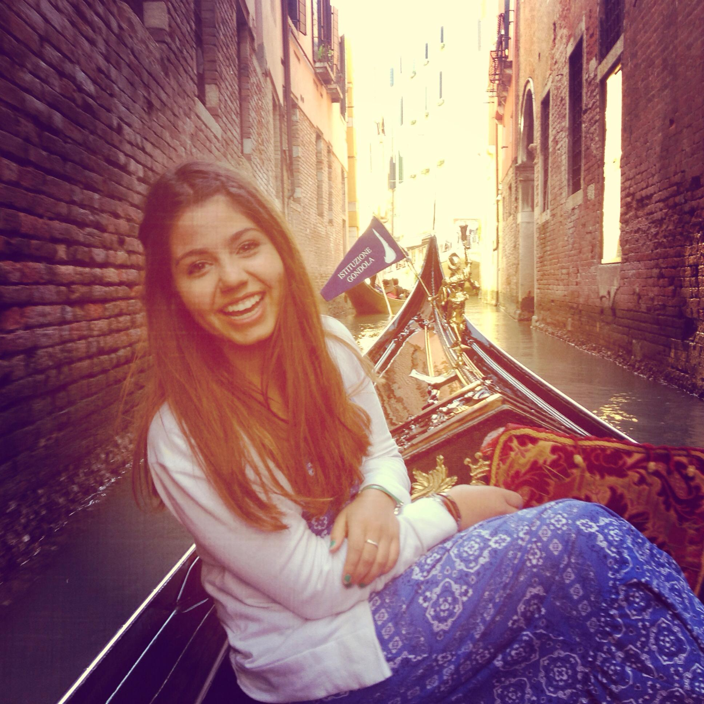

About

Keila came to USCB pursing her dream to become a programmer.
After previously working at Accenture providing maintance to the Disney websites and mobile apps
she decided she knew what it was she wanted to study and enrolled in the University's Computational Science program.
As she developed her skills, her passion for programming and development became to grown. Though she was faily new to
computational sceince, the subject matter gradually grew on her. By the end of her first year, there was no question what her career would be.
The realization of creating things from catch as a programmer fascinated her. The experience from her school projects range from creating a video game,
a database, and websites for non-profits have become pivotal experiences to her development.
Keila is intrigued by design, traveling, music, strategy, fabulous food, and notable conversations.